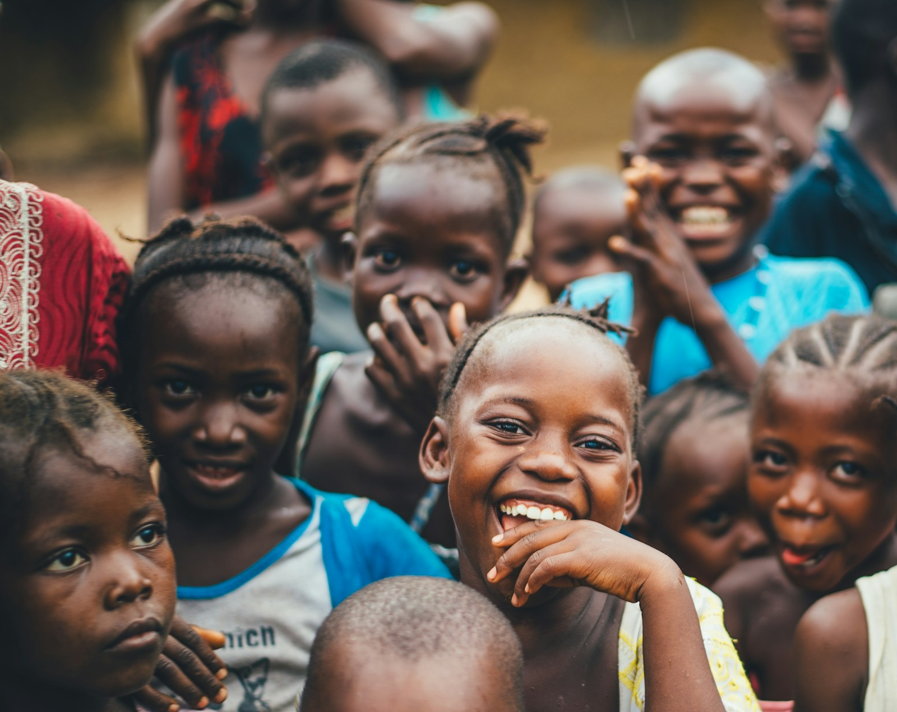

A network of associations
Find people who share your interests. Explore sector communities spanning learning, enterprise, technology, wellbeing and more.
Explore the network ↗When people come together, possibilities grow. Connecting communities with knowledge, support and opportunities to move forward.

New Global Net Foundation is a Section 8 company bringing people together through a network of sector associations and a shared community platform.
Our purpose is to make it easier for individuals, professionals and communities to connect, exchange knowledge and discover opportunities. From education and entrepreneurship to wellness and women’s self-help, our network brings different interests into one community.
Discover the community, the associations and the platform that connect our work.
Find people who share your interests. Explore sector communities spanning learning, enterprise, technology, wellbeing and more.
Explore the network ↗Start with free registration on NWG. Explore the community and review paid membership options and programme terms on the member platform.
Discover membership ↗Access the existing NWG marketplace for coupons, discounts, recharge, utility services and other available member services.
Meet the NWG platform ↗Find your place in the network.
No associations match your search. Try education, health or technology.
Explore all 12 associations. Each link opens the association’s dedicated website in a new tab.
This is the home of New Global Net Foundation. Our existing NWG member platform is where you can register, explore membership and access services.
Visit the NWG platform ↗Services are provided through the existing platform and are subject to its availability and terms.
Understanding the foundation and its member platform.
New Global Net Foundation is the Section 8 company behind this institutional website. It brings together a community network across different sectors.
This website introduces the foundation, its purpose and network. The existing NWG website remains the working member platform for registration, membership, marketplace access and services.
Yes. Free registration is available on the NWG platform. Paid membership is described at ₹1,000; review the current fee, eligibility, benefits and terms on the platform before joining.
It is a community crowdfunding programme described by NWG. Participation, contribution rules, eligibility and any potential assistance must be checked on the member platform. A payment does not guarantee income or receipt of ₹10 lakh.
Visit the existing NWG platform to explore registration, associations and available donation options. Review the relevant programme details before making a contribution.
Connect with a community built around shared possibilities.
Automated FAQ guide · No live agent · Chat stays in this tab